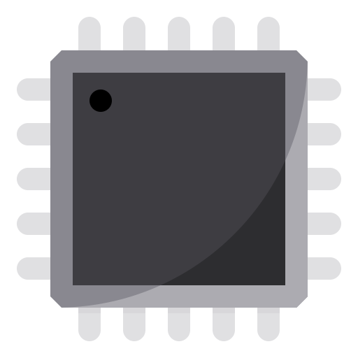

<div class="Titlebar">
  <div
      [ngClass]="{'Title-Bar' : isActive,  'Title-Bar-inactive': !isActive}"
  >
      <div class="Titlebar-drag-region"></div>
      <div class="Title-Bar__section-icon">
        <div class="section-icon__logo">
          
        </div>
        <div class="section-icon__title">
          <p>Starter App</p>
        </div>
      </div>
      <div class="Title-Bar__section-menubar">
      </div>
      <div class="Title-Bar__section-center">
      </div>
      <div class="Title-Bar__section-windows-control">
          <div
              class="section-windows-control_box">
              <svg xmlns="http://www.w3.org/2000/svg" width="14" height="14" viewBox="0 0 24 24" strokeLinejoin="round"><circle (click)="minimizeHandler()" [ngClass]="{ 'minimize-active_logo' : isActive,  'minimize-inactive_logo': !isActive }" cx="11.6" cy="11.6" r="11.4" /></svg>
          </div>
          <div
              class="section-windows-control_box">
              <svg xmlns="http://www.w3.org/2000/svg" width="14" height="14" viewBox="0 0 24 24" strokeLinejoin="round"><circle (click)="maximizeHandler()" [ngClass]="{ 'maximize-active_logo' : isActive,  'maximize-inactive_logo': !isActive }" cx="11.6" cy="11.6" r="11.4" /></svg>
          </div>
          <div
              class="section-windows-control_box">
              <svg xmlns="http://www.w3.org/2000/svg" width="14" height="14" viewBox="0 0 24 24" strokeLinejoin="round"><circle (click)="closeHandler()" [ngClass]="{ 'close-active_logo' : isActive,  'close-inactive_logo': !isActive }" cx="11.6" cy="11.6" r="11.4" /></svg>
          </div>
      </div>
      <div
          *ngIf="!isMaximized"
          class="resizer">
      </div>
  </div>
</div >
